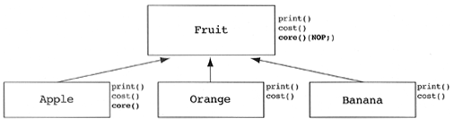

Hyland Clinician Window : Some Object-Oriented Design Heuristics - Riel
Created by Damon German, last modified on Aug 17, 2021
- Chapter 2. Classes and Objects: The Building Blocks of the Object-Oriented Paradigm
- Heuristic 2.1 All data should be hidden within its class.
- Heuristic 2.2 Users of a class must be dependent on its public interface, but a class should not be dependent on its users.
- Heuristic 2.3 Minimize the number of messages in the protocol of a class.
- Heuristic 2.4 Implement a minimal public interface that all classes understand [e.g., operations such as copy (deep versus shallow ), equality testing, pretty printing, parsing from an ASCII description, etc.].
- Heuristic 2.5 Do not put implementation details such as common-code private functions into the public interface of a class.
- Heuristic 2.6 Do not clutter the public interface of a class with things that users of that class are not able to use or are not interested in using.
- Heuristic 2.8 A class should capture one and only one key abstraction.
- Heuristic 2.9 Keep related data and behavior in one place.
- Heuristic 2.10 Spin off non related information into another class (i.e., noncommunicating behavior).
- Chapter 3. Topologies of Action-Oriented (Procedural) Versus Object-Oriented Applications
- Heuristic 3.1 Distribute system intelligence horizontally as uniformly as possible, that is, the top-level classes in a design should share the work uniformly.
- Heuristic 3.2 Do not create god classes/objects in your system. Be very suspicious of a class whose name contains Driver , Manager , System , or Subsystem.
- Heuristic 3.3 Beware of classes that have many accessor methods defined in their public interface. Having many implies that related data and behavior are not being kept in one place.
- Heuristic 3.4 Beware of classes that have too much noncommunicating behavior, that is, methods that operate on a proper subset of the data members of a class. God classes often exhibit a great deal of noncommunicating behavior.
- Heuristic 3.5 In applications that consist of an object-oriented model interacting with a user interface, the model should never be dependent on the interface. The interface should be dependent on the model.
- Heuristic 3.6 Model the real world whenever possible. (This heuristic is often violated for reasons of system intelligence distribution, avoidance of god classes, and the keeping of related data and behavior in one place.)
- Heuristic 3.9 Do not turn an operation into a class. Be suspicious of any class whose name is a verb or is derived from a verb, especially those that have only one piece of meaningful behavior (i.e., do not count sets , gets , and prints ). Ask if that piece of meaningful behavior needs to be migrated to some existing or undiscovered class.
- Chapter 4. The Relationships Between Classes and Objects
- Heuristic 4.6 Most of the methods defined on a class should be using most of the data members most of the time.
- Heuristic 4.7 Classes should not contain more objects than a developer can fit in his or her short- term memory. A favorite value for this number is six.
- Heuristic 4.8 Distribute system intelligence vertically down narrow and deep containment hierarchies.
- Heuristic 4.13 A class must know what it contains, but it should never know who contains it.
- Heuristic 4.14 Objects that share lexical scope ”those contained in the same containing class ”should not have uses relationships between them.
- Chapter 5. The Inheritance Relationship
- Heuristic 5.1 Inheritance should be used only to model a specialization hierarchy.
- Heuristic 5.2 Derived classes must have knowledge of their base class by definition, but base classes should not know anything about their derived classes.
- Heuristic 5.3 All data in a base class should be private; do not use protected data.
- Heuristic 5.4 In theory, inheritance hierarchies should be deep ”the deeper, the better.
- Heuristic 5.5 In practice, inheritance hierarchies should be no deeper than an average person can keep in his or her short- term memory. A popular value for this depth is six.
- Heuristic 5.6 All abstract classes must be base classes.
- Heuristic 5.7 All base classes should be abstract classes.
- Heuristic 5.8 Factor the commonality of data, behavior, and/or interface as high as possible in the inheritance hierarchy.
- Heuristic 5.9 If two or more classes share only common data (no common behavior), then that common data should be placed in a class that will be contained by each sharing class.
- Heuristic 5.10 If two or more classes have common data and behavior (i.e., methods), then those classes should each inherit from a common base class that captures those data and methods.
- Heuristic 5.11 If two or more classes share only a common interface (i.e., messages, not methods), then they should inherit from a common base class only if they will be used polymorphically.
- Heuristic 5.12 Explicit case analysis on the type of an object is usually an error. The designer should use polymorphism in most of these cases.
- Heuristic 5.13 Explicit case analysis on the value of an attribute is often an error. The class should be decomposed into an inheritance hierarchy, where each value of the attribute is transformed into a derived class.
- Heuristic 5.15 Do not turn objects of a class into derived classes of the class. Be very suspicious of any derived class for which there is only one instance.
- Heuristic 5.16 If you think you need to create new classes at runtime, take a step back and realize that what you are trying to create are objects. Now generalize these objects into a class.
- Heuristic 5.17 It should be illegal for a derived class to override a base class method with a NOP method, that is, a method that does nothing.
- Heuristic 5.18 Do not confuse optional containment with the need for inheritance. Modeling optional containment with inheritance will lead to a proliferation of classes.
- 5.19 A Problem with No Optimal Solution
- It is important to be sure that the problem actually exists before discussing the possible solutions. This problem often occurs due to naming problems of methods.
- Assuming that the problem really exists, our options are limited.
- To many designers, the best solution is to define a core method on the fruit class which is defined as a NOP. This design choice is often called the "fat interface" solution.
- 
- Another popular solution.
- Chapter 6. Multiple Inheritance
- Heuristic 6.1 If you have an example of multiple inheritance in your design, assume you have made a mistake and then prove otherwise.
- Heuristic 6.3 Whenever you have found a multiple inheritance relationship in an object-oriented design, be sure that no base class is actually a derived class of another base class.
{kind=link}
{kind=link}
{kind=link}
{kind=link}
{kind=link}
{kind=link}